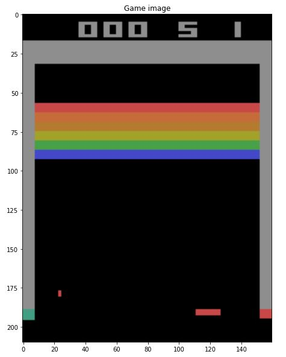
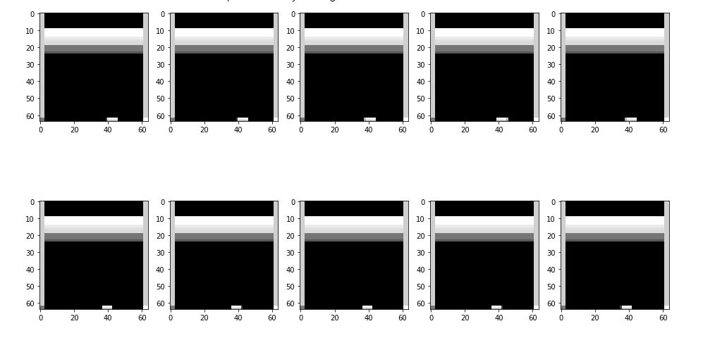
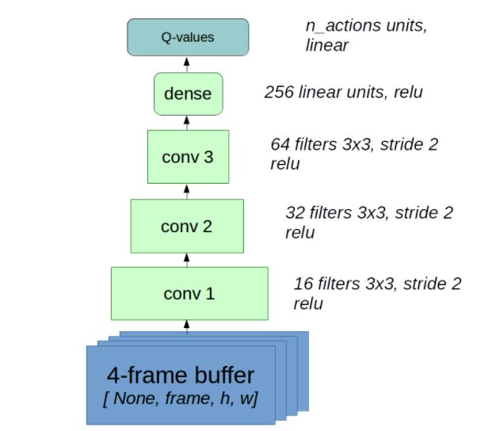
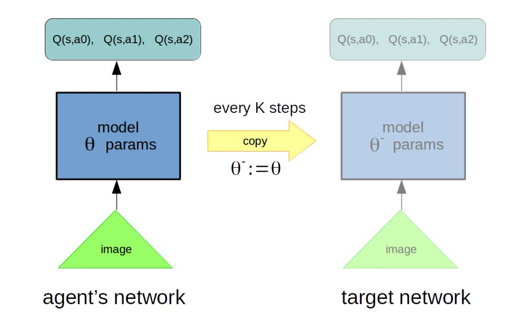
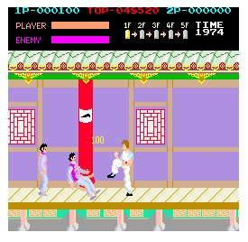
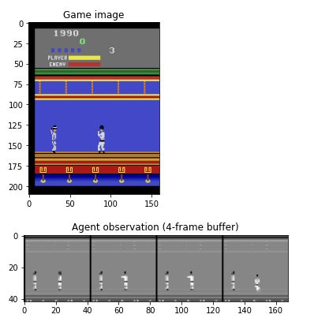
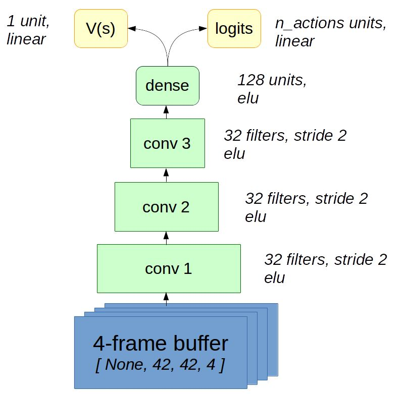

Building a Deep Q-Network for Training Atari 2600 VCS Breakout

In this project, a deep Q-network is implemented using experience replay and target networks to train a 2600 VCS Breakout Atari game.
The coding has been done both in Tensorflow and Pytorch frameworks.
At first, a preprocess on the input images is done, and they are cut to make the process easier with fewer amounts of data.
Then, a greyscale is added to the images to reduce the processing time for training.

A frame buffer is considered based on
this article
to be used on the experience replay.
The CNN network has four dense convolutional layers and one output layer for the Q values.
which would be called on every agent's step.

Using target networks as reference Q-values, Q-learning TD error is computed.

After that, using the Adam Optimizer, the agent has trained for about 75k steps.
Finally, after reaching a reward of almost 13 or 14 per every life, the training is stopped.
Here you can see the result:
Building a Deep Reinforcement Learning with Advantage Actor-Critic for Atari Kung-Fu Master

This project is training an agent for playing Atari Kung-Fu Master gym environment with parallel Advantage Actor-Critic method.
First, four grayscaled frames are stacked and cropped to make the agent interpret the object's velocity.

Then, the agent is built with three convolutional neural layers containing 32 filters and the elu activation function,
followed by a final dense layer with 128 units.
Finally, there are two outputs, one for the actor and one for the critic part, the actor has its units based on the number of actions in the game,
and the critic is the value predicted which has one unit.

Then, the environment is trained to get the rewards.
The training process is done with ten different environments on parallel to make the training more stable.
For each of the environments, the agent tries to use this a3c algorithm to improve its rewards.
After reaching a good reward, and a near-zero policy entropy, it is interpreted that the agent has learned the policy.
Here you can see the result:
Translation of Hebrew words in English(g2p) with a policy-based reinforcement learning method
Considering words as a sequence of letters, an encoder-decoder architecture is used in this project to convert Hebrew words to their English translations.
After mapping strings to token ids and vice versa, the encoder reads words character by character and outputs code vector,
and the decoder takes that code vector and produces translations character by character. Here minimal Levenshtein distance is used.
It measures how many characters we need to add/remove/replace from model translation to make it perfect.
Reinforcement learning is employed in this project to translate the words with self-critical sequence training.

Deep Cross Entropy Method:
The first part of this project is learning to control an inverted pendulum using cross entropy method on gym environment.

The second part of the project is for the mountain climbing car to reach the goal on top of the mountain
via deep cross entropy method. As it is pictured in the graph bellow you can see that the car learns
the best policy and reaches the goal using this method.

Here is the GitHub link of this project:
Building a web page like Google Keep
This project was the Front-end development workshop's project held by "Made in Lobby 2021".
The concepts covered were javascript, HTML, and CSS. I was an attendee in this workshop. This project has
the aim of making a webpage like "Google Keep." To do so, first adding notes were distinguished using javascript,
then some stylings were added like the ones in google keep itself. Here are some pictures of how this webpage would
look like in different devices having different sizes.
This is how the webpage looked finally:

Here is the GitHub repository of this project:
The Brick Breaker Game by Python,
(CS106A project, Code in place 2020, C. Piech & M. Sahami)
This is CS106A final project for code in place, Stanfor university;
The main idea behind this project is to use Python merely to creat a game.
Here is a demo of how the game works:
Stanford Code in Place Projects
Some of other projects:
Design and Implementation of an Object Avoidance and Path Planning Algorithm for TurtleBot3 in ROS,
(ROS & Gazebo training online course project, Maktabkhooneh)
3RPS Parallel Manipulator kinematics, dynamical modeling, and motion/force control by MSC Adams and Matlab,
(Parallel Robots course project, Prof. Hamid D. Taghirad)
Designing a Fuzzy Logic Controller for Car Parallel Parking by MATLAB Simulink,
(Fuzzy Logic and Fuzzy Artificial Neural Network Control course project, Prof. Ali Ghaffari)
AL5B Serial Manipulator kinematics, dynamical modeling, and motion/force and impedance control by MATLAB,
(Control in Robotics course project, Prof. S. A. A. Moosavian)
Designing a program for ordering car prices in a MySQL database, (Advanced Python online course,
Web scrapping project, Maktabkhooneh)
Car Price Prediction via Linear Regression, SVM, KNN and ANN by MATLAB,
(Machine Learning course project, Dr. Babak Nasersharif)
Deep Neural Network for Image Classification,
(Neural Networks and Deep Learning online course project, Coursera, Andrew Ng)